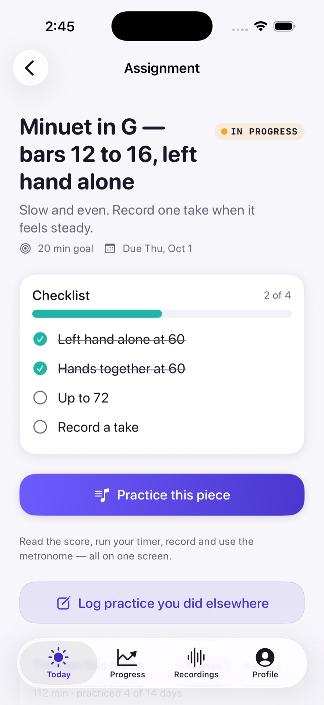
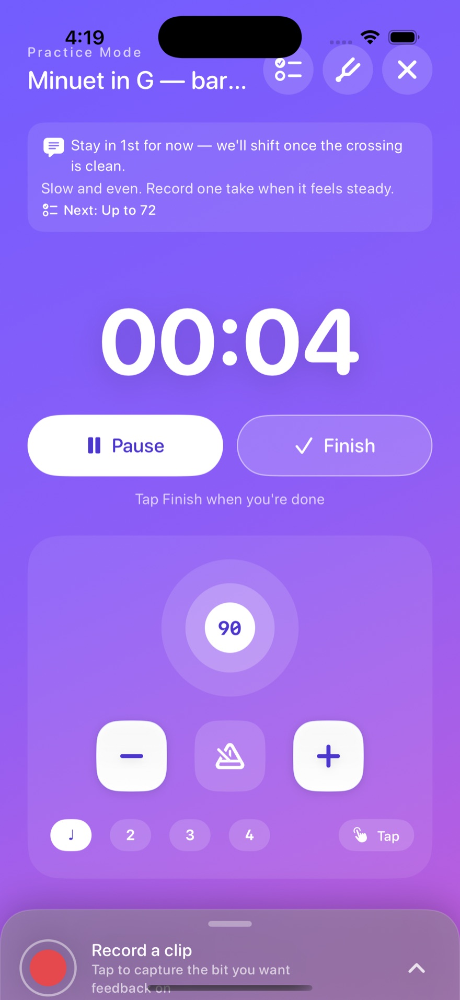
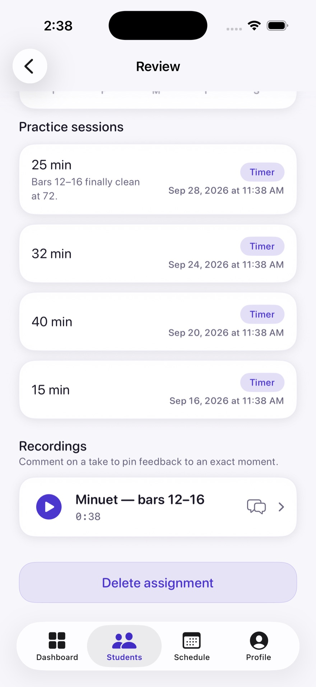

Ask on the page.
Mark the question where it happens.
Music practice, connected
You guide the lesson. They carry it into practice. Stay connected through the music.



Historical native demo captures · current launch screens pending.
THE WEEK BETWEEN LESSONS
A mark on the score. A clear intention. With Prova, what you teach becomes what they practise.
“Let the phrase carry
through the half note.”
A lesson ends.
The guidance stays with the music.
THE LESSON → THE DETAIL → TONIGHT’S PRACTICE
THE LESSON KEEPS GOING
FOR TEACHERSYour teaching stays in the room.Leave the thought where it matters—on the music they’ll open at home.
FOR STUDENTSSit down with a place to start.Return to the phrase, keep your teacher’s note in view, and share what you hear.
See how a note finds its moment ↓03 / Feedback that meets the moment
Listen closer.Listen to the take. Pin the guidance.
The student knows exactly where to return.
04 / Every note can be a conversation
Two musicians. One score.Their question. Your guidance. Separate layers on the same music, ready for the next practice.
Mark the question where it happens.
Open their saved score. Add your guidance.
Save. Reopen. Take the next step together.
Conceptual annotation choreography · original editorial notation, not an app screenshot
Two layers. One shared understanding.
Scroll the story or choose a perspective.
Effort, made visible
See the practice you’re building, one day at a time.
Every milestone matters
Your first practice session is worth recognising.
Tap the medal · conceptual artworkYour moment to shine / Studio
An opt-in performance-sharing story for independent studios. Planned beyond the current beta.
The Studio feed is off during beta. Teacher controls and student permissions must be confirmed before this experience is offered.
Planned sequence · not an enabled beta workflow.
Illustrative practice data and conceptual achievement artwork. Current app captures pending.
For parents / A part in the music
For families, it starts with a simple question: “What are you working on?” Look at Today together. Make room for practice. Celebrate the effort.
For your studio. For their next step.
Free during the beta. When pricing arrives,
teachers pay; students and parents never do.
This is a private cinematic prototype. Product images are historical native demo captures. The waveform, score, progress chart and medal are clearly labeled conceptual treatments grounded in the app’s implementation. Current launch captures and artwork remain needed. Studio is beta-gated.
View preserved Direction A ↗
“Let the half note ring its full value.”
0:18 · Teacher feedback · conceptual demonstration.